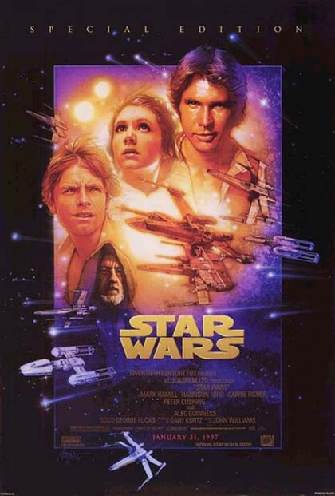
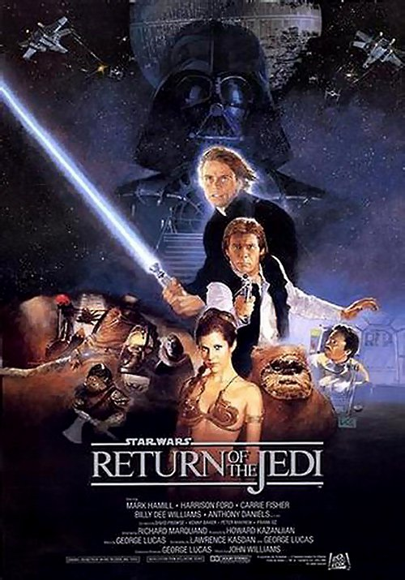
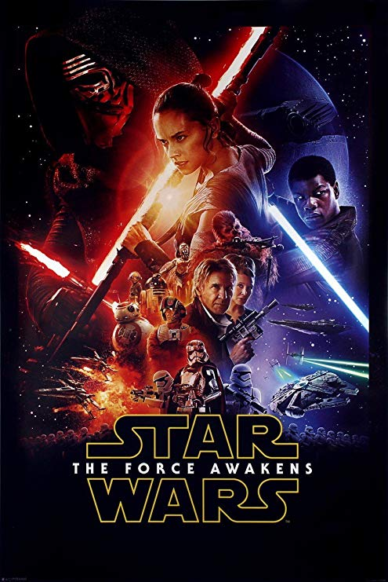
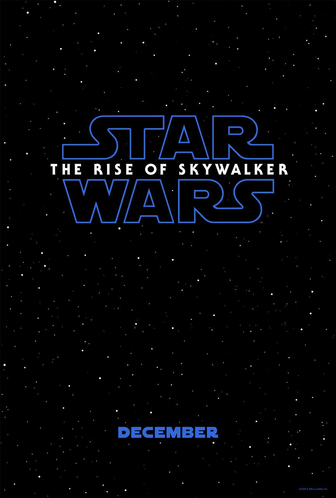
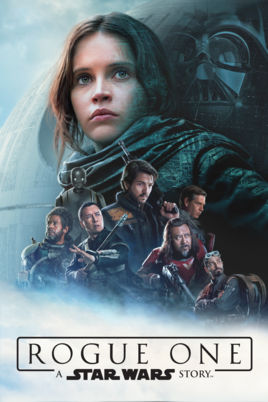
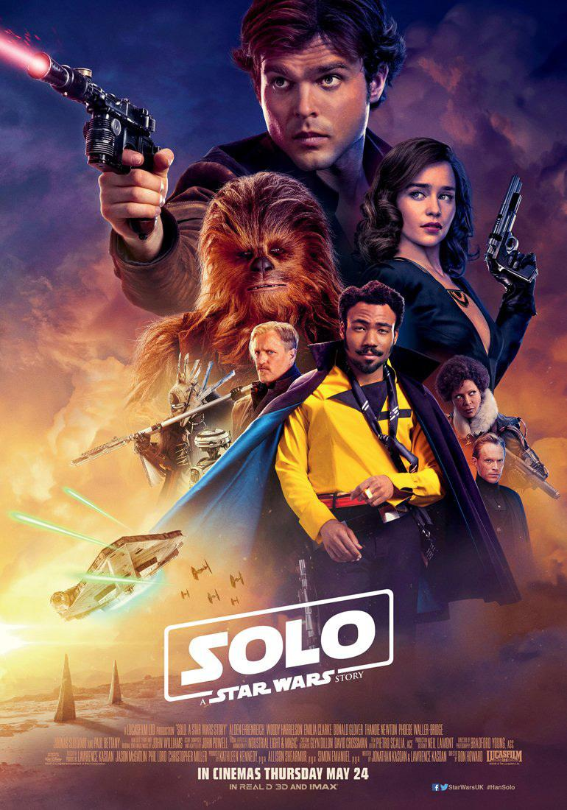

Il maestro Jedi Qui-Gon Jinn e il suo padawan Obi-Wan Kenobi vengono inviati sul pianeta Naboo per mediare una disputa tra la Repubblica Galattica e la corrotta Federazione dei Mercanti, alle dipendenze del Signore Oscuro dei Sith Darth Sidious. Dopo il fallimento della mediazione, incrociano un gungan di nome Jar Jar Binks e decidono di aiutare la regina Padmé Amidala a lasciare il pianeta per denunciare la crisi al Senato della Repubblica. A causa di un guasto all'iperpropulsore, il gruppo deve atterrare sul pianeta desertico Tatooine, dove incontra Anakin Skywalker, uno schiavo di nove anni, che Qui-Gon crede essere il Prescelto, destinato a portare equilibrio nella Forza. Dopo aver riscattato la propria libertà in una gara di sgusci, Anakin lascia il pianeta insieme al gruppo. Tornati a Naboo, ormai teatro di battaglia tra la popolazione del pianeta e la Federazione, Qui-Gon viene ucciso nello scontro col Sith Darth Maul, che poco appresso viene sconfitto da Obi-Wan. Il padawan promette al maestro morente di addestrare Anakin affinché diventi un Jedi, nonostante il consiglio Jedi, guidato da Yoda, abbia delle riserve sul ragazzo. Pochi giorni dopo, Obi-Wan e Anakin vengono accolti come eroi su Naboo, onorati da Amidala e dal nuovo cancelliere della Repubblica, Palpatine.
Dieci anni dopo la battaglia di Naboo, Darth Sidious e il Jedi rinnegato Dooku creano la Confederazione dei Sistemi Indipendenti, un'alleanza di sistemi planetari che promuove la sua secessione dalla Repubblica. Nel frattempo il giovane Anakin viene assegnato come guardia a Padmé, diventata senatrice e vittima di numerosi attentati, mentre Obi-Wan si mette alla caccia del sicario. Anakin e Padmé si innamorano, nonostante il codice Jedi impedisca al ragazzo qualunque attaccamento amoroso. Obi-Wan scova il cacciatore di taglie su Kamino, dove è segretamente in corso la creazione di un massiccio esercito di cloni. Obi-Wan viene catturato dalla Confederazione, e in suo soccorso accorrono i Jedi, appoggiati da Palpatine, che, grazie ai nuovi poteri conferitigli dal Senato, ufficializza la creazione dell'esercito di cloni come armata della Repubblica. L'episodio segna l'avvio delle guerre dei cloni tra forze repubblicane e separatiste in tutta la Galassia. Intanto Padmé e Anakin si sposano con una cerimonia segreta su Naboo.
A tre anni dall'inizio delle guerre dei cloni, Anakin e Obi-Wan si recano in soccorso di Palpatine, il quale è stato catturato da Dooku e dal comandante dei droidi Generale Grievous. Anakin, intanto, ha continui sogni premonitori che presagiscono la morte di Padmé. Palpatine, il quale si rivela essere il Signore Oscuro dei Sith, cerca di attrarre Anakin dalla sua parte, convincendolo che il Lato Oscuro racchiude il potere di salvare la vita di Padmé. Disperato, Anakin cede agli insegnamenti di Palpatine e diventa suo allievo. Mentre Palpatine scioglie il Senato e instaura l'Impero Galattico, autoproclamandosi Imperatore, Anakin e l'esercito dei cloni sterminano i Jedi. Obi-Wan affronta il suo allievo sul pianeta vulcanico Mustafar, privandolo delle gambe e di un braccio e lasciandolo moribondo. Il ragazzo viene però salvato in tempo da Sidious, operato e dotato di uno scafandro salvavita, diventando Dart Fener. Frattanto, Padmé muore dando alla luce due gemelli, Luke e Leila, che vengono separati e nascosti su Tatooine e Alderaan, dove i due Sith non percepiranno la loro presenza.
ORIGINAL TRILOGY


Sono trascorsi diciannove anni dalla fondazione dell'Impero Galattico. L'Imperatore Palpatine ha rafforzato il suo potere sulla Galassia, mentre Lord Dart Fener ha inseguito e ucciso gli ultimi Jedi sopravvissuti. Nel frattempo si è formata l'Alleanza Ribelle, la quale, sferrando un attacco a sorpresa alla flotta imperiale, è entrata in possesso delle planimetrie della Morte Nera, una stazione spaziale capace di distruggere con il suo cannone principale interi pianeti. La Principessa Leila, membro dell'Alleanza, viene raggiunta dagli agenti dell'Impero, ma riesce a trasferire i piani nella memoria del droide R2-D2, che, accompagnato dal droide C-3PO, sbarca sul pianeta Tatooine alla ricerca di Obi-Wan Kenobi. I due vengono catturati e venduti al contadino Owen Lars, che vive insieme con la moglie e il nipote Luke Skywalker; questi scopre la loro provenienza e missione, e li accompagna da Obi-Wan, il quale vive in esilio su Tatooine sotto l'identità di Ben Kenobi. L'anziano Obi-Wan racconta a Luke che suo padre è caduto per il tradimento di Dart Fener e lo introduce alla filosofia Jedi. Per consegnare i piani ai ribelli, Luke e Obi-Wan reclutano il contrabbandiere Ian Solo, pilota dell'astronave Millennium Falcon, e il suo co-pilota, lo wookiee Chewbecca. Il Millennium Falcon giunge sulla Morte Nera, dove Luke e Ian soccorrono la Principessa Leila mentre Obi-Wan affronta Dart Fener. Il gruppo si mette in salvo nella base ribelle sulla luna del pianeta Yavin e consegna i piani all'Alleanza. La Morte Nera viene dunque attaccata dai ribelli, e distrutta grazie all'intervento di Luke.
Tre anni dopo la distruzione della Morte Nera, le forze ribelli sono costrette a evacuare la loro base sul pianeta ghiacciato Hoth per sfuggire alla persecuzione da parte delle armate imperiali, sempre guidate da Dart Fener. Mentre Leila e Ian si dirigono verso il pianeta Bespin, Luke, guidato dallo spirito di Obi-Wan, fa rotta per Dagobah per sottoporsi all'addestramento dell'ultimo maestro Jedi ancora in vita, Yoda. Giunti a Cloud City, la capitale di Bespin governata da Lando Calrissian, Leila e Ian trovano Dart Fener ad attenderli e vengono imprigionati. Avvertendo il pericolo in cui si trovano i due amici, Luke parte in loro soccorso. Al termine di un lungo duello con Dart Fener, Luke perde una mano e scopre che Fener è suo padre, un ex cavaliere Jedi un tempo chiamato Anakin Skywalker. Mentre il Sith invita il figlio a unirsi a lui, Lando riesce a soccorrere il ragazzo e a liberare Leila, Ian invece viene imprigionato e consegnato dal cacciatore di taglie Boba Fett a Jabba the Hutt, il capo di un vasto impero criminale e creditore di Ian.
Luke e Leila escogitano un piano per liberare Ian dalle grinfie di Jabba the Hutt. Riusciti nel loro intento, Luke torna su Dagobah per completare il suo allenamento, ma scopre che Yoda è sul letto di morte. Il maestro Jedi gli rivela che Dart Fener, un tempo Anakin Skywalker, è realmente suo padre e che il giovane deve affrontarlo nuovamente per diventare finalmente un Jedi. Dallo spirito di Obi-Wan, inoltre, Luke scopre che Leila è sua sorella. Con l'Impero che ha messo mano alla costruzione di una nuova Morte Nera, Ian e Leila guidano un gruppo di ribelli sulla Luna boscosa di Endor, abitata dagli Ewok, per disattivare il campo di energia che alimenta lo scudo spaziale di protezione della stazione orbitante, mentre le forze aeree ribelli si preparano all'assalto. Nel frattempo sulla Morte Nera, Luke affronta Dart Fener e l'Imperatore. Luke viene sopraffatto da Palpatine con i poteri del Lato Oscuro, ma Fener, per proteggerlo, si scaglia contro l'Imperatore, uccidendolo e morendo poco dopo tra le braccia del figlio a causa delle ferite riportate. La stazione orbitante viene infine distrutta e Luke riesce a ricongiungersi con Ian e Leila. Mentre i ribelli festeggiano la loro vittoria sull'Impero, Luke sorride agli spiriti di Obi-Wan e Yoda, ai quali si è infine unito quello di suo padre, il Jedi Anakin Skywalker.
SEQUEL TRILOGY


Trent'anni dopo la distruzione della seconda Morte Nera, Luke è scomparso. L'Impero si è riorganizzato nel Primo Ordine, contrastato dalla Resistenza appoggiata dalla Nuova Repubblica. Su Jakku, il pilota ribelle Poe Dameron ottiene una mappa indicante la posizione di Luke, ma, a causa di un attacco del Primo Ordine, viene catturato, riuscendo a nascondere la mappa all'interno del droide BB-8. Disgustato dall'uccidere vittime innocenti, lo stormtrooper del Primo Ordine Finn diserta e aiuta Poe a evadere e giungere a Jakku, dove i due sono separati. Finn trova BB-8 in compagnia di Rey, una ragazza che si guadagna da vivere rivendendo rottami. I tre fuggono a bordo di un'astronave in disuso, che si rivela essere il Millennium Falcon. Il gruppo, a cui si aggiungono anche Ian Solo e Chewbecca, riesce a consegnare la mappa alla Resistenza, ma Rey viene catturata da Kylo Ren, il figlio di Ian e Leila passato al lato oscuro e affiliato al Primo Ordine. Il Primo Ordine attacca la Repubblica tramite la sua nuova superarma, la base Starkiller, distruggendo la capitale e il Senato. Per eliminare la minaccia, Ian, Chewbecca e Finn si infiltrano nella base Starkiller, sabotano gli scudi spaziali di protezione e trovano Rey. Ian tenta di convincere il figlio ad abbandonare il lato oscuro, ma Kylo Ren lo uccide e si scaglia poi contro Finn e Rey, la quale lo sconfigge grazie alla sua predisposizione all'uso della Forza. Nel frattempo, le forze aeree ribelli attaccano la base e la distruggono, mentre Rey, Finn e Chewbecca riescono a mettersi in salvo sul Millennium Falcon. Combinando la mappa in possesso della Resistenza con quella contenuta in R2-D2, Rey riesce infine a raggiungere Luke.
Subito dopo la distruzione della base Starkiller, la Resistenza viene messa in fuga dal pianeta D'Qar e inseguita dal Primo Ordine, che le infligge pesanti perdite. In disaccordo con gli ordini impartiti, Poe Dameron, Finn, Rose Tico e BB-8 si avventurano in una missione segreta per reclutare un mastro apri-codici, intrufolarsi nella nave ammiraglia nemica e disattivare il localizzatore del Primo Ordine, che permette di tracciare i movimenti della Resistenza attraverso l'iperspazio; la missione tuttavia fallisce, e, solo grazie al sacrificio della vice-ammiraglia Amilyn Holdo, i superstiti della Resistenza riescono a raggiungere il pianeta Crait. Intanto Rey trova Luke Skywalker sul pianeta Ahch-To e lo convince a insegnarle la via dei Jedi. Tramite una connessione mentale con Kylo Ren, Rey viene attirata in una trappola da Snoke; ma invece che uccidere la giovane, Ren si ribella al suo maestro, lo uccide e assume il titolo di nuovo leader supremo. Durante la battaglia finale su Crait tra Primo Ordine e Resistenza, Luke appare in proiezione e affronta Ren, dando così modo ai ribelli di evacuare il pianeta; in seguito il Jedi si lascia morire, diventando un tutt'uno con la Forza.
Work in progress...
SPINOFF


Lo scienziato Galen Erso, dopo aver lavorato per anni per l'Impero Galattico ed essere andato in esilio con la sua famiglia, viene raggiunto dal Direttore Imperiale Orson Krennic che lo costringe a completare la progettazione della Morte Nera. Erso però,prima dell arrivo dell imperiale fa fuggire sua figlia Jyn che viene salvata da un ribelle di nome Saw Gerrera. 15 anni dopo Jyn decide di aiutare i ribelli a ritrovare suo padre e insieme all'ufficiale ribelle Cassian Andor e al droide K-2SO raggiungono Jedha per incontrare Gerrera, che le mostra un messaggio in cui lo scienziato rivela di aver inserito una vulnerabilità nel reattore della Morte Nera che ne permetterebbe la sua distruzione. Nel frattempo il Governatore Tarkin incontra Krennic a bordo della Morte Nera e dimostra il potere della Morte Nera distruggendo Jedha City; Jyn e il suo gruppo, sono costretti a fuggire, mentre Guerrera si lascia morire nella distruzione. Rook conduce Jyn sul pianeta Eadu, dove si trova un centro di ricerca imperiale in cui lavora Galen e i ribelli attaccano il centro di ricerca, provocando però la morte di Galen, quindi Jyn propone all'Alleanza Ribelle di sottrarre i piani di progettazione della Morte Nera ai database imperiali su Scarif, ma il comando ribelle respinge il piano. Jyn allora raduna un gruppo di volontari per recarsi segretamente su Scarif; utilizzando il nome in codice "Rogue One". Arrivati su Scarif, Jyn, Cassian e K-2SO si infiltrano nel complesso e rubano i piani, mentre i volontari e l'Alleanza Ribelle avvia delle azioni d attacco per fornire supporto. Deciso a prendere in mano la situazione, Krennic si reca sul posto scatenando una sparatoria al termine della quale Cassian viene ferito ma Jyn riesce a fuggire. Anche sul resto del pianeta e nello spazio le cose non vanno meglio, in quanto i ribelli cadono uno dopo l'altro. Per riuscire a inviare i piani alle forze ribelli nello spazio, tramite un trasmettitore, la flotta deve riuscire ad aprire un varco per permetterne il trasferimento e completare l'operazione. Raddius con un'astuta manovra militare riesce ad aprire il varco richiesto, Jyn raggiunge la sommità della base militare, su cui si trova l'antenna necessaria per trasmettere i piani ma Krennic decide di porre fine all'attacco ribelle sparando il raggio della morte nera. Raggiunta la spiaggia, Jyn e Cassian osservano la tremenda esplosione e si abbracciano lasciandosi travolgere dall'esplosione che distrugge il pianeta.
Agli albori dell'Impero Galattico, il giovane Han sopravvive, commettendo furti di vario genere per poter comprare per sè e la sua amata Qi'ra la libertà. Dopo un colpo fallito, Qi'ra viene catturata dai criminali, mentre Han è costretto a fuggire dagli imperiali, si arruola nella accademia di volo imperiale. Tre anni più tardi, Han è nella fanteria e durante una battaglia viene aiutato da Tobias Beckett. Volendo partire con loro, li ricatta minacciando di raccontare la verità, ma l'uomo se ne libera denunciandolo come disertore e per questo viene messo in cella con un prigioniero Wookiee di nome Chewbecca. Han si allea con il Wookiee; i due fuggono e rintracciano Beckett. Beckett, Val e Durant si trovano quindi ad attuare il piano per impossessarsi del coassio. Tutto va bene, fino a quando il recupero del coassio non viene interrotto da Enfys Nest. Durant viene ucciso, e Val si sacrifica per aiutare Beckett, e infine il coassio viene distrutto da Han. Beckett spiega a Han che senza quel carico, l'Alba Cremisi lo avrebbe ucciso, e Han decide di aiutarlo. Si recano alla base dove Han incontra nuovamente Qi'ra, la quale gli racconta di essere stata salvata dal suo attuale comandate, Dryden Vos. I due vengono minacciati di essere uccisi se non troveranno un altro modo di recuperare altro coassio: Han propone di rubarne un ingente carico dalle miniere di Kessel, per poi farlo raffinare successivamente. Dryden Vos accetta e manda Qi'ra per controllare il loro operato. Per affrontare la missione c'è bisogno di una nave molto veloce, allora la squadra si rivolge Lando Calrissian, che decide di aiutarli,mettendo a disposizione il suo mercantile, il Millennium Falcon. L'equipaggio atterra su Kessel con non poche difficoltà e ruba la merce e sale sul Falcon.Giunti sul pianeta Savareen il gruppo viene catturato dai predoni di Enfys Nest, la quale rivela che loro sono una cellula della nascente Alleanza Ribelle e che il coassio gli serve per combattere l'Impero e i suoi alleati. Lando fugge con il Falcon e Beckett se ne va, dicendo ad Han che su Tatooine un boss sta mettendo su una squadra per un colpo. Dryden Vos li raggiunge e Han escogita un piano per ingannarlo, ma viene smascherato da Beckett. Ma Han aveva capito fin da subito il suo tradimento e con l'aiuto di Qi'ra e dei ribelli aveva teso una trappola ai due. Qi'ra uccide Vos in duello e manda Han a salvare Chewbecca, preso in ostaggio da Beckett, che nel caos era fuggito col carburante. Rimasta sola, Qi'ra contatta il leader supremo dell'Alba Cremisi. Il leader si rivela essere l'ex Signore Oscuro Darth Maul. Nel frattempo Han raggiunge Beckett, che gli dice che Qi'ra lo ha tradito e ha preso il posto di Vos. Han non gli crede e, anticipando la sua mossa, lo uccide sparandogli, ma si ricrede quando vede Qi'ra fuggire con la nave di Vos. A questo punto Solo cede quasi tutto il carico di coassio all'Alleanza Ribelle, pur rifiutando la proposta di entrare a farne parte. Più tardi Han rintraccia e sfida nuovamente Lando a una partita a carte, riuscendo a vincere e diventando il legittimo proprietario del Millennium Falcon, con cui riparte per Tatooine assieme a Chewbecca.